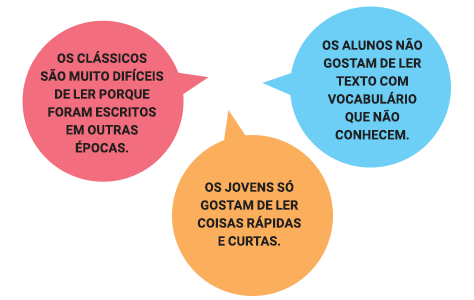

Voltar para Atividades
A mediação da leitura
-

Bem, as afirmações ao lado parecem verdadeiras em muitas situações vividas pelos professores. No entanto, a mediação da leitura pode ser um instrumento poderoso para alterar essa realidade. Existem formas diferentes de solicitar a leitura aos alunos, que não deixam de ser maneiras de mediar a leitura.
Você costuma ler junto com seus alunos, na classe, trechos considerados difíceis?
Ao ler, você passa seus conhecimentos de leitor experiente para eles, ajudando-os a compreender o sentido do texto e a desvendar sua beleza?
Você dá espaço para negociar com seus alunos os possíveis sentidos de um texto?
Como fazer a leitura de um texto de literatura na escola ou em outros espaços educativos?
É possível pedir aos alunos uma leitura solitária em casa, seguida de uma conversa da classe toda sobre o texto, ou uma leitura solitária na classe, que pode contar com a ajuda da professora para dúvidas, ou ainda uma leitura em grupo, em voz alta, durante a qual os colegas discutem sobre o que cada um entendeu. Todas essas formas podem estar também combinadas, utilizando-se uma estratégia para cada parte do texto. Há inúmeras maneiras de ler literatura, mas para escolher uma estratégia, é preciso ter em mente qual é o objetivo que se tem com a leitura.
Para ver exemplos de leituras de textos literários mediadas, conheça o material do Entre na Roda - Leitura na escola e na comunidade.

Compreensão textual
Ler é atribuir sentidos. A compreensão exige que o leitor estabeleça relações entre o texto e seus conhecimentos prévios.
É importante observar alguns aspectos que ajudam a indicar o quão complexo um texto literário pode ser para um leitor em formação. Por exemplo: grau de formalidade no uso da língua (a variante usada no texto é próxima ou distante do leitor?); vocabulário (há muitas palavras desconhecidas?); gênero (o leitor já teve contato com esse gênero, é capaz de identificar suas características?); suporte (livro, jornal, revista etc.); objetivo da leitura (fruição, debate, pesquisa etc.). Conhecer os indicadores da complexidade do texto ajuda o professor e/ou mediador a perceber qual é o seu papel para auxiliar o leitor em cada caso.
Conheça mais sobre práticas de leitura e formas de mediação no Especial Práticas de leitura na escola.